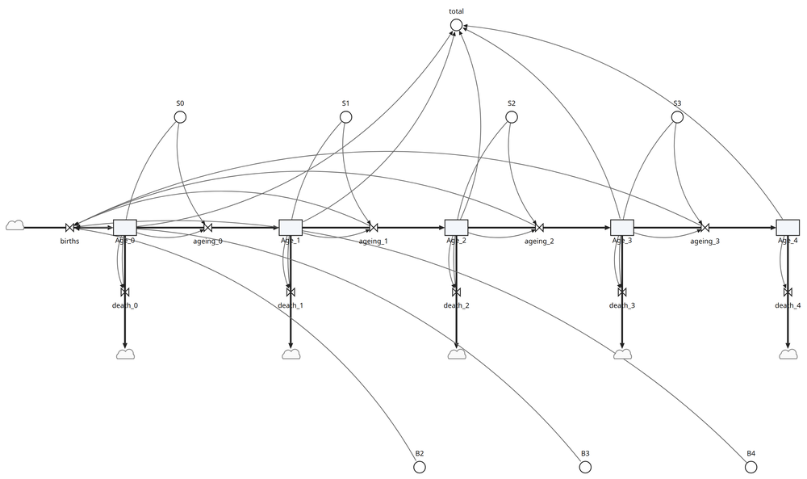

Age-structured population: a stock per age class
Five age classes, newborns being class 0. Each year the animals in each class survive into the next, or die (none survive beyond class 4), and the survivors reaching classes 2 to 4 give birth. This version: conventional System Dynamics: five stocks, ageing flows between them; easy to follow, but every class repeats the same equations. Survival (S) and birth (B) rates are sliders. Survival from ages 0-3: [0.6, 0.85, 0.9, 0.9]; births per animal reaching ages 2-4: [0.7, 0.85, 0.85]; starting numbers [40, 20, 16, 14, 10] (chosen for illustration: the program asks for them).
It opens with its plots and its sliders: move a slider and the model runs again.
Open in SimileFrom Norman Owen-Smith's book Introduction to Modeling in Wildlife and Resource Conservation (Blackwell, 2007), converted from its TrueBASIC program AGEINTR.tru and published here with his permission. The model spec: ageintr-stocks.json.

An age-structured population: four designs in Simile
Each is a model of its own. In Simile, the Metadata panel (Widgets › Metadata) lists them too, and opens any of them beside this one.
- A stock per age class (this model): conventional System Dynamics: five stocks, ageing flows between them; easy to follow, but every class repeats the same equations
- One submodel, five instances: the class written once, in a fixed-membership submodel; ageing passed between instances through an array every instance sees
- Submodel and "next class" association: as the submodel, but each class receives only from the class below, through an association; the diagram shows the relationship